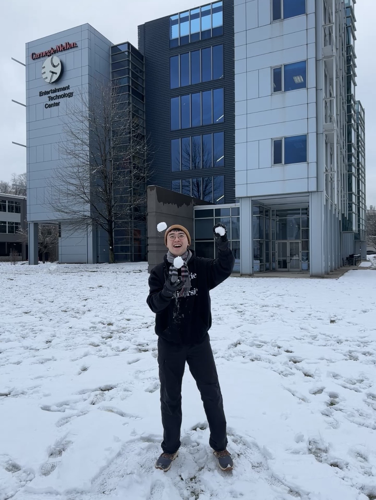

Yen Chun (James) Huang
I’m a game developer who likes making ideas happen. With engineering behind me and a love of board games, I pay a lot of attention to detail. What I like is making something, then watching how other people react to it.
I'm constantly fascinated by new tech and new ways of interaction. A lot of the time I want to be the first person to see something new actually happen, so I take that work on myself. Breathing as an input, smart shoes, a machine learning .io game bot, combat with audio inputs, and a lot more fun stuff.
- Mento-Issue won the Pittsburgh non-traditional award at Global Game Jam 2025.
- Camp Movewell was nominated for the 2026 Games for Change Awards, Best in Health & Wellness.
Contact
Always up for talking about games, odd input devices, or a project you want a hand with.
Skills
My development stack.
Engines
- VR/XR
- TouchDesigner
- Unreal
- Unity
Code
- Networking
- OOP
- HTML/CSS
- JavaScript
- Python
- C/C++
- C#
VFX
- Shader
- VFX Graph
- Particles
- Photoshop
Pipeline
- AI Workflow
- Perforce
- Git
What Makes French Games French
A look at the studios, the cities, and the creative conditions behind France’s indie scene.
- France
- Game Development
- Culture
What Are We Actually Fighting For?
On designing a reason to fight.
- Game Design
How 18 cards are enough to play a game
Game designs that fit in your pocket.
- Minimalism
- Board Game Design
Happy Developer, Happy Players
It starts with a happy mind and body.
- Game Development
- Mental Health
- Creative Process
Can I find the “toy” in games?
Start designing the game by finding the toy.
- Creative Process
- Game Design
I’m Better Than My Stats
Is meta-progression killing mastery?
- Game Design
美國遊戲設計碩士 Game Design/Development Master 申請分享 2024 Fall
為什麼想讀遊戲設計，以及有相關學程的學校介紹。
- Grad School
- 中文